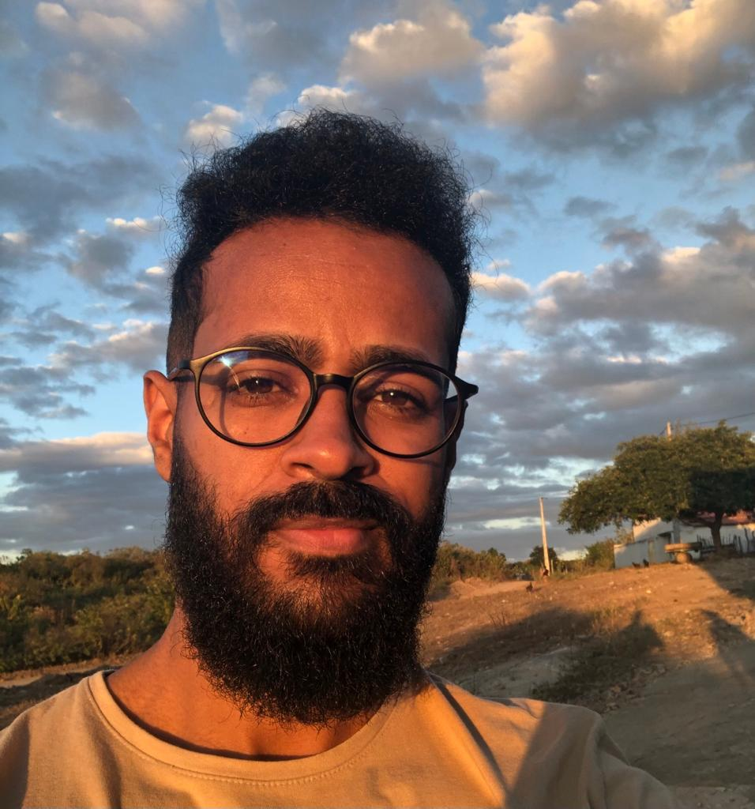

Sobre Mim
Olá! Me chamo Davi, tenho 23 anos e sou natural de Cotia-SP. Atualmente, sou aluno de Ciência da Computação na UFCG e estou constantemente em busca de desafios que me permitam expandir meus conhecimentos e habilidades no desenvolvimento de software. Na área de desenvolvimento de software, tenho explorado diversas linguagens, incluindo Java, Python e JavaScript. Além disso, possuo conhecimento em bancos de dados como PostgreSQL e MySQL. Comecei a trabalhar em projetos e estudos aplicados ao Spring Boot, assim como tecnologias de desenvolvimento web com o objetivo de construir uma base sólida e preparar-me para enfrentar os desafios do campo da tecnologia. Aos 16 anos, tive a oportunidade enriquecedora de morar no Canadá por seis meses, através de um intercâmbio no ensino médio. Durante minha estadia lá, aprimorei meu inglês, habilidade que coloquei em prática posteriormente ao atuar como professor de inglês. Além disso, também sou professor voluntário de música, onde compartilho minha paixão pela música e minha habilidade de tocar guitarra. Além de minha dedicação aos estudos, busco aplicar essa dedicação em experiências práticas. Já atuei como atendente de call center, onde apliquei meus conhecimentos técnicos básicos para desenvolver duas aplicações simples, porém úteis, tanto para mim quanto para meus colegas. Essas ferramentas são utilizadas na operação até hoje e estão disponíveis em meu portfólio, onde demonstro minha intenção de aplicar conceitos técnicos em situações práticas. Apesar da minha experiência prática limitada, estou sempre em busca de aprender algo novo e aprimorar minhas habilidades existentes. Por fim, quando não estou programando, estou tocando guitarra, um hobby que me inspira e me permite viver a música, que é uma paixão já citada anteriormente.